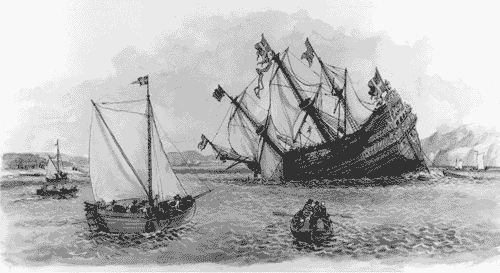

Chapter 1. The Architecture Business Cycle
Simply stated, competitive success flows to the company that manages to establish proprietary architectural control over a broad, fast-moving, competitive space.
—C. Morris and C. Ferguson [Morris 93]
For decades, software designers have been taught to build systems based exclusively on the technical requirements. Conceptually, the requirements document is tossed over the wall into the designer's cubicle, and the designer must come forth with a satisfactory design. Requirements beget design, which begets system. Of course, modern software development methods recognize the naïveté of this model and provide all sorts of feedback loops from designer to analyst. But they still make the implicit assumption that design is a product of the system's technical requirements, period.
Architecture has emerged as a crucial part of the design process and is the subject of this book. Software architecture encompasses the structures of large software systems. The architectural view of a system is abstract, distilling away details of implementation, algorithm, and data representation and concentrating on the behavior and interaction of "black box" elements. A software architecture is developed as the first step toward designing a system that has a collection of desired properties. We will discuss software architecture in detail in Chapter 2. For now we provide, without comment, the following definition:
The software architecture of a program or computing system is the structure or structures of the system, which comprise software elements, the externally visible properties of those elements, and the relationships among them.
Chapter 2 will provide our working definitions and distinguish between architecture and other forms of design. For reasons we will see throughout, architecture serves as an important communication, reasoning, analysis, and growth tool for systems. Until now, however, architectural design has been discussed in the light that, if you know the requirements for a system, you can build the architecture for it.
|
In the 1620s, Sweden and Poland were at war. The king of Sweden, Gustavus Adolphus, was determined to put a swift end to it and commissioned a new warship the likes of which had never been seen before. The Vasa, shown in Figure 1.1, was to be the world's most formidable instrument of war: 70 meters long, able to carry 300 soldiers, and with an astonishing 64 heavy guns mounted on two gun decks. Seeking to add overwhelming firepower to his navy to strike a decisive blow, the king insisted on stretching the Vasa's armaments to the limits. Her architect, Henrik Hybertsson, was a seasoned Dutch shipbuilder with an impeccable reputation, but the Vasa was beyond even his broad experience. Two-gun-deck ships were rare, and none had been built of the Vasa's size and armament.
Used with permission of The Vasa Museum, Stockholm, Sweden.

Like all architects of systems that push the envelope of experience, Hybertsson had to balance many concerns. Swift time to deployment was critical, but so were performance, functionality, safety, reliability, and cost. He was also responsible to a variety of stakeholders. In this case, the primary customer was the king, but Hybertsson also was responsible to the crew that would sail his creation. Also like all architects, Hybertsson brought his experience with him to the task. In this case, his experience told him to design the Vasa as though it were a single-gun-deck ship and then extrapolate, which was in accordance with the technical environment of the day. Faced with an impossible task, Hybertsson had the good sense to die about a year before the ship was finished.
The project was completed to his specifications, however, and on Sunday morning, August 10, 1628, the mighty ship was ready. She set her sails, waddled out into Stockholm's deep-water harbor, fired her guns in salute, and promptly rolled over. Water poured in through the open gun ports, and the Vasa plummeted. A few minutes later her first and only voyage ended 30 meters beneath the surface. Dozens among her 150-man crew drowned.
Inquiries followed, which concluded that the ship was well built but "badly proportioned." In other words, its architecture was flawed. Today we know that Hybertsson did a poor job of balancing all of the conflicting constraints levied on him. In particular, he did a poor job of risk management and a poor job of customer management (not that anyone could have fared better). He simply acquiesced in the face of impossible requirements.
The story of the Vasa, although more than 375 years old, well illustrates the Architecture Business Cycle: organization goals beget requirements, which beget an architecture, which begets a system. The architecture flows from the architect's experience and the technical environment of the day. Hybertsson suffered from the fact that neither of those were up to the task before him.
In this book, we provide three things that Hybertsson could have used:
Case studies of successful architectures crafted to satisfy demanding requirements, so as to help set the technical playing field of the day. Methods to assess an architecture before any system is built from it, so as to mitigate the risks associated with launching unprecedented designs. Techniques for incremental architecture-based development, so as to uncover design flaws before it is too late to correct them.
Our goal is to give architects another way out of their design dilemmas than the one that befell the ill-fated Dutch ship designer. Death before deployment is not nearly so admired these days.
— PCC
|
This is short-sighted (see the sidebar The Swedish Ship Vasa) and fails to tell the whole story. What do you suppose would happen if two different architects, working in two different organizations, were given the same requirements specification for a system? Do you think they would produce the same architecture or different ones?
The answer is that, in general, they would produce different ones, which immediately belies the notion that requirements determine architecture. Other factors are at work, and to fail to recognize them is to continue working in the dark.
The focusing question is this: What is the relationship of a system's software architecture to the environment in which the system will be constructed and exist? The answer to this question is the organizing motif of this book. Software architecture is a result of technical, business, and social influences. Its existence in turn affects the technical, business, and social environments that subsequently influence future architectures. We call this cycle of influences, from the environment to the architecture and back to the environment, the Architecture Business Cycle (ABC).
This chapter introduces the ABC in detail and sets the stage for the remainder of the book. The major parts of the book tour the cycle by examining the following:
How organizational goals influence requirements and development strategy. How requirements lead to an architecture. How architectures are analyzed. How architectures yield systems that suggest new organizational capabilities and requirements.

|